SINH MÔ TẢ ẢNH TỰ ĐỘNG
SỬ DỤNG HỌC SÂU
Neural Image Caption Generation
| Sinh viên thực hiện | Lê Văn Cảnh Nguyễn Đức Trường Giang |
| Lớp | DT2307L |
| Giảng viên hướng dẫn | Hồ Nhựt Minh |
| Trường | Aptech |
| Năm học | 2025 – 2026 |
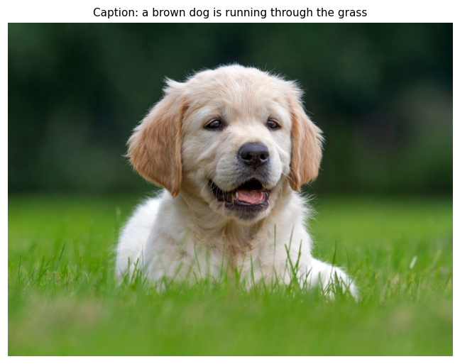
| # | Nội dung |
|---|---|
| 1 | Đặt vấn đề — Tại sao làm bài này? |
| 2 | Dataset — Flickr30k |
| 3 | Công nghệ sử dụng — Tại sao chọn? |
| 4 | Kiến trúc mô hình |
| 5 | Quá trình huấn luyện |
| 6 | Kết quả & Demo |
| 7 | Phân tích — Kết luận |
Bài toán: Máy tính có thể "đọc" và mô tả ảnh không?
🖼️ [Ảnh một người đang chạy]
↓
🤖 "A man is running on a track"Ứng dụng thực tế:
| Ứng dụng | Mô tả |
|---|---|
| 👁️ Hỗ trợ người khiếm thị | Đọc nội dung ảnh qua giọng nói |
| 🔍 Tìm kiếm ảnh | Tìm ảnh bằng mô tả ngôn ngữ tự nhiên |
| 📱 Mạng xã hội | Tự động gợi ý caption cho ảnh |
| 🤖 Robot thông minh | Robot hiểu và mô tả môi trường |
| 🏥 Y tế | Tự động mô tả ảnh X-quang, MRI |
Nhóm em nghiên cứu và so sánh 3 hướng tiếp cận:
| Mô hình | Encoder | Decoder | Đặc điểm |
|---|---|---|---|
| Mô hình 1 | VGG16 | LSTM + Attention | Baseline — phổ biến, đơn giản |
| Mô hình 2 | ResNet-101 | LSTM + Attention | Đặc trưng sâu hơn (2048 chiều) |
| Mô hình 3 | CLIP ViT-B/32 | LSTM + Attention | Ngữ nghĩa vision-language |
✅ Cả 3 mô hình: cùng dataset, cùng decoder, cùng tập test → So sánh công bằng
Dữ liệu huấn luyện
Young et al., 2014 — Một trong những dataset chuẩn nhất cho bài toán Image Captioning
| Thông số | Giá trị |
|---|---|
| Tổng số ảnh | 31,783 ảnh |
| Số mô tả | 158,915 câu (5 câu/ảnh) |
| Định dạng | JPEG — đa dạng chủ đề |
| Nguồn nhãn | Amazon Mechanical Turk (người thật gán nhãn) |
| Ngôn ngữ | Tiếng Anh |
Phân chia dữ liệu (seed = 42 — đảm bảo tái lập kết quả):
| Tập | Số ảnh | Tỷ lệ | Số caption |
|---|---|---|---|
| Train | 29,769 | 93.7% | 148,844 |
| Validation | 1,014 | 3.2% | 5,070 |
| Test | 1,000 | 3.1% | 5,000 |
📌 3 mô hình dùng chung tập Test → So sánh công bằng
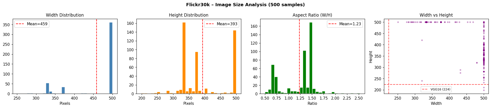
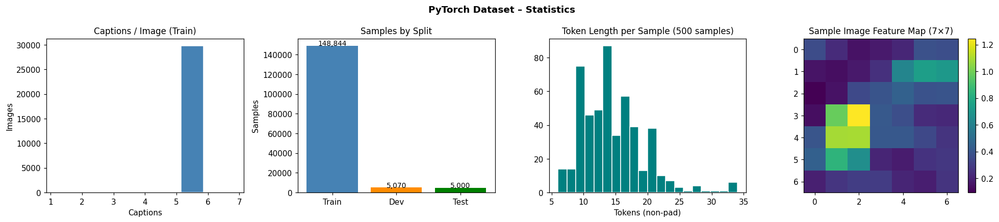
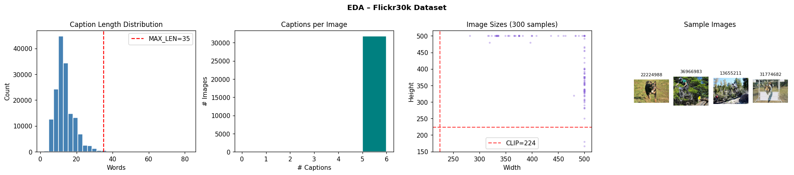
Pipeline xử lý caption
Raw caption: "A man Running in the Park!!"
↓ (lowercase)
"a man running in the park"
↓ (loại ký tự đặc biệt)
"a man running in the park"
↓ (thêm token bắt đầu/kết thúc)
"startseq a man running in the park endseq"Từ điển (Vocabulary):
| Thông số | Giá trị |
|---|---|
| Vocab thô (trước lọc) | > 23,457 từ |
| Vocab sau lọc | 10,000 từ phổ biến nhất |
| Giảm | 57.4% — loại bỏ từ hiếm gặp |
| GloVe 300d coverage | 99.2% được khởi tạo từ GloVe |
📖 GloVe (Pennington et al., 2014) — Vector từ 300 chiều, huấn luyện trên 6 tỷ token từ Wikipedia
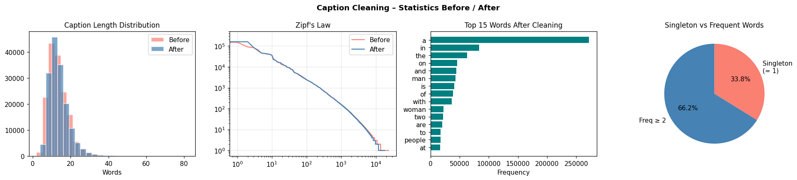
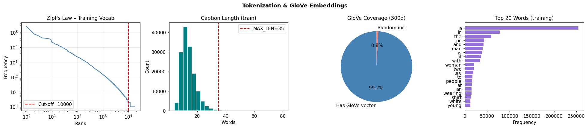
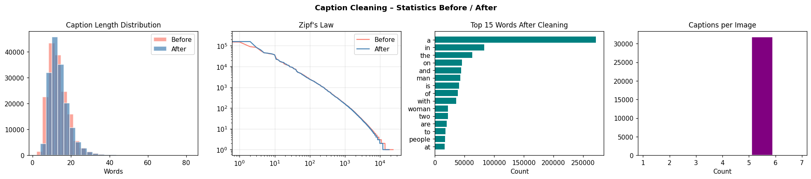
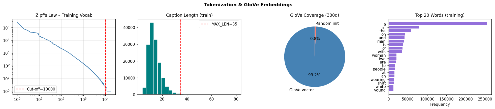
Encoder – Decoder với Bahdanau Attention
┌─────────────┐
Ảnh 224×224×3 → │ ENCODER │ → Features (49, D)
│ CNN / ViT │
└─────────────┘
│
▼
┌─────────────────────────────────┐
│ DECODER │
Caption (từng │ GloVe Embedding (300d) │
từ một) → │ ↓ │
│ LSTMCell (512) ←── context │
│ ↓ ↑ │
│ Output Projection │ │
│ ↓ │ │
│ Softmax(10,000) [Attention] │
└─────────────────────────────────┘- D = 512 cho VGG16 và CLIP
- D = 2048 cho ResNet-101
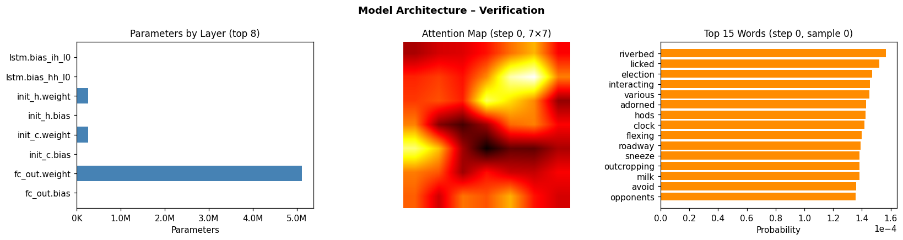
Tại sao dùng VGG16?
Simonyan & Zisserman, 2014 — Giải nhất ImageNet 2014
| Đặc điểm | Giá trị |
|---|---|
| Kiến trúc | 16 lớp CNN, đơn giản, đồng nhất |
| Lớp trích xuất | conv5_3 (block cuối cùng) |
| Feature shape | (49, 512) — 49 vị trí × 512 kênh |
| Pre-trained | ImageNet — 1.2 triệu ảnh, 1000 lớp |
| Vai trò trong đề tài | Baseline — mô hình cơ sở để so sánh |
Ảnh 224×224 → [Conv Block 1-5] → Feature Map 7×7×512 → reshape → (49, 512)✅ Đơn giản, được kiểm chứng rộng rãi, phù hợp làm baseline
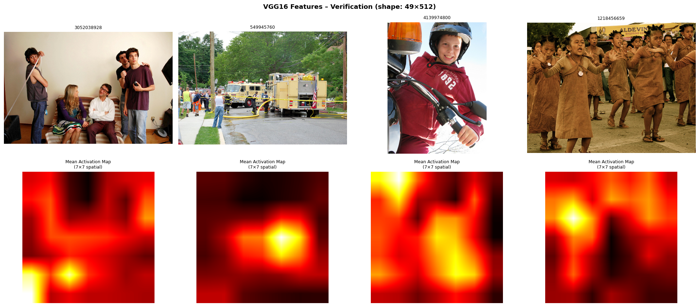
Tại sao nâng cấp lên ResNet-101?
He et al., 2016 — Giải nhất ImageNet 2015, CVPR Best Paper
| Đặc điểm | Giá trị |
|---|---|
| Kiến trúc | 101 lớp — Residual Connections (kết nối tắt) |
| Lớp trích xuất | layer4 |
| Feature shape | (49, 2048) — gấp 4 lần VGG16 |
| Ưu điểm chính | Học được đặc trưng sâu hơn mà không bị vanishing gradient |
VGG16: (49, 512) ← ít thông tin hơn
ResNet-101: (49, 2048) ← đặc trưng phong phú gấp 4 lầnResidual connection: Nếu lớp hiện tại không học được gì → truyền thẳng kết quả lớp trước qua (skip connection) → không bị mất thông tin
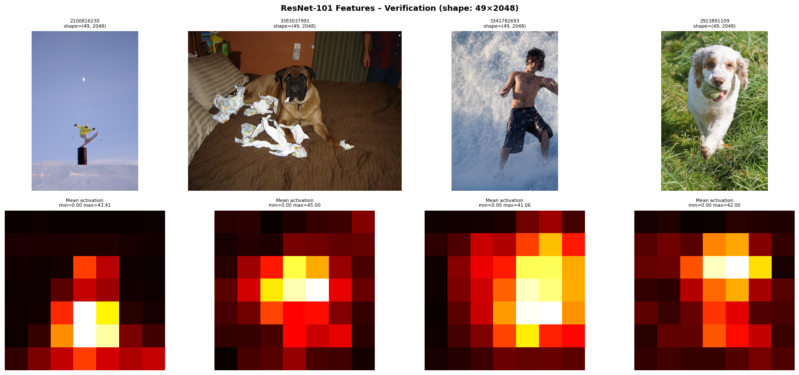
Tại sao thử CLIP?
Radford et al., 2021 — OpenAI — Contrastive Language-Image Pretraining
| Đặc điểm | Giá trị |
|---|---|
| Kiến trúc | Vision Transformer (ViT-B/32) |
| Huấn luyện trên | 400 triệu cặp (ảnh, văn bản) từ internet |
| Phương pháp | Contrastive Learning — ảnh và caption phải "gần nhau" trong không gian vector |
| Feature shape | (49, 512) |
| Đặc điểm nổi bật | Feature đã chứa ngữ nghĩa ngôn ngữ — không chỉ visual |
VGG16 / ResNet: Chỉ học từ ảnh (ImageNet — phân loại 1000 lớp)
CLIP: Học đồng thời từ ÂNH + VĂN BẢN (400M cặp) → hiểu ngữ nghĩa✅ Lý thuyết: CLIP nên tốt hơn vì feature đã align với ngôn ngữ
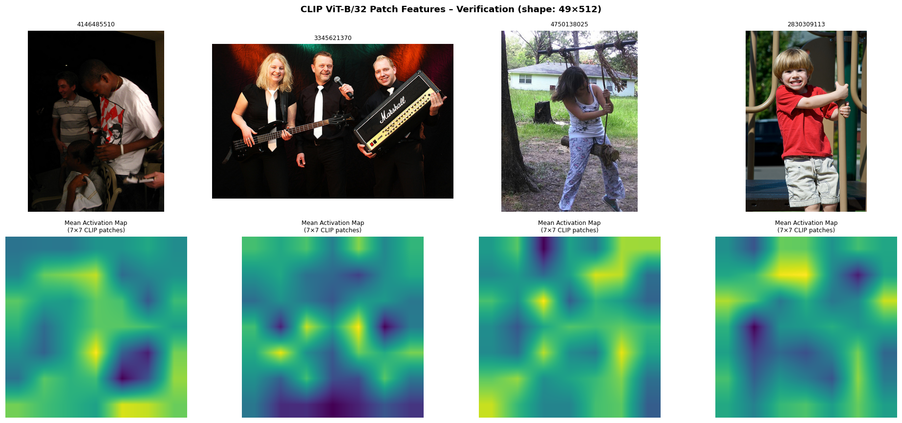
Tại sao cần Attention?
Không có Attention: Có Attention:
"A man is running" "A man is running"
↑ ↑
Chỉ nhìn 1 vector tổng Nhìn đúng vùng "người đang chạy"
của toàn bộ ảnh khi sinh từ "man" và "running"Công thức Bahdanau Attention:
Bahdanau et al., 2014 — "Neural Machine Translation by Jointly Learning to Align and Translate"
e_i = V^T · tanh(W_h · h_{t-1} + W_f · f_i) ← điểm số vùng ảnh thứ i
α_i = softmax(e_i) ← trọng số chú ý (tổng = 1)
c_t = Σ α_i · f_i ← context vectorh_{t-1}: trạng thái ẩn LSTM bước trướcf_i: đặc trưng ảnh tại vị trí không gian thứ i (i = 1..49)α_i: mức độ chú ý tại vị trí i — càng cao càng quan trọngc_t: context vector — tóm tắt thông tin ảnh cần thiết tại bước t
📌 Hiển thị heatmap attention từ notebook
Teacher Forcing — Khi huấn luyện
Ground truth: startseq a man is running endseq
Đầu vào LSTM: startseq a man is running ↑
Đầu ra LSTM: a man is running endseq✅ Dù LSTM đoán sai ở bước trước → vẫn nhận từ đúng làm input → Huấn luyện ổn định, hội tụ nhanh
Beam Search — Khi sinh caption (Inference)
Greedy: chọn từ có xác suất cao nhất tại mỗi bước → dễ bị cục bộ tối ưu
Beam Search (width = 5):
Bước 1: Giữ 5 ứng viên tốt nhất: "a", "the", "man", "two", "group"
Bước 2: Mở rộng 5×vocab → Giữ 5 tốt nhất tiếp theo
...
Chọn chuỗi có log-probability tổng cao nhất✅ Kết quả tốt hơn greedy vì tìm kiếm rộng hơn trong không gian caption
Hyperparameters (giống nhau cho cả 3 mô hình)
| Tham số | Giá trị |
|---|---|
| Vocab size | 10,000 |
| Embedding dim | 300 (GloVe 300d) |
| LSTM hidden size | 512 |
| Dropout | 0.5 |
| Batch size | 64 |
| Learning rate | 1e-4 (AdamW) |
| LR Scheduler | ReduceLROnPlateau (×0.5 nếu không cải thiện 3 epoch) |
| Early stopping | Patience = 7 epoch |
| Beam width | 5 |
Số epoch thực tế:
| Mô hình | Epochs | Thời gian / epoch | Ghi chú |
|---|---|---|---|
| VGG16 | 30 epochs | ~400 giây | Early stopping epoch 30 |
| ResNet-101 | 10 epochs | ~1,200 giây | Hội tụ nhanh hơn |
| CLIP | 10 epochs | ~900 giây | Feature extraction nhanh nhất |
📌 Hiển thị Training Loss Curves từ notebook (3 mô hình)
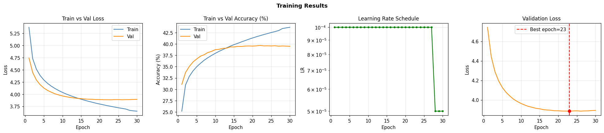
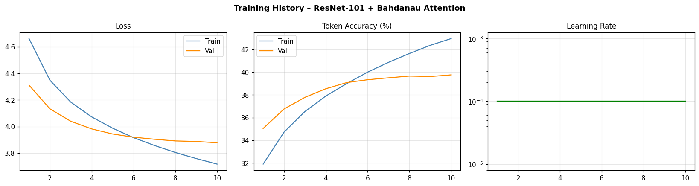
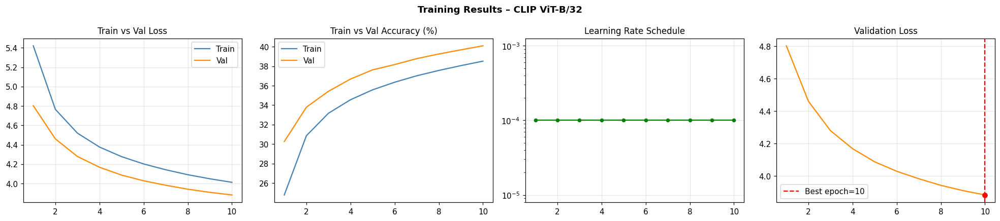
BLEU là gì và tại sao dùng?
Papineni et al., 2002 — IBM — Được dùng chuẩn trong hơn 20 năm cho NLP
Ý nghĩa đơn giản:
Caption sinh ra: "a dog is running in the park"
Ground truth: "a brown dog runs across the grass"
BLEU-1 (1-gram): "a", "dog", "in", "the" → khớp 4/7 → 57%
BLEU-2 (2-gram): "a dog" → khớp 1/6 → 17%
BLEU-4 (4-gram): 4 từ liên tiếp phải khớp → Khó nhất, chuẩn nhất| Thước đo | Ý nghĩa | Độ khó |
|---|---|---|
| BLEU-1 | Từ đơn khớp với ground truth | Dễ |
| BLEU-2 | Cặp từ khớp | Trung bình |
| BLEU-4 | 4 từ liên tiếp khớp | Khó — chỉ số chính |
📌 Đánh giá trên 1,000 ảnh × 5 caption/ảnh = 5,000 câu tham chiếu → Kết quả đáng tin cậy
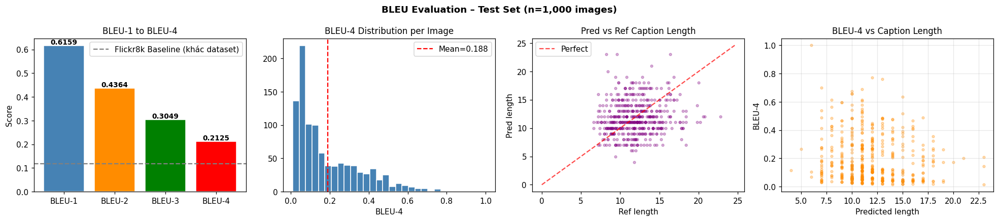
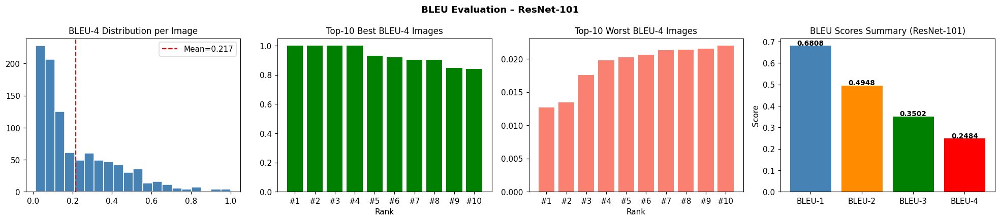
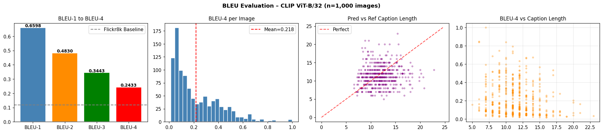
BLEU Score trên tập Test (1,000 ảnh, Beam Width = 5)
| Mô hình | BLEU-1 | BLEU-2 | BLEU-3 | BLEU-4 |
|---|---|---|---|---|
| VGG16 + LSTM | 61.6% | 43.6% | 30.5% | 21.3% |
| CLIP + LSTM | 66.0% | 48.3% | 34.4% | 24.3% |
| ResNet-101 + LSTM | 68.1% | 49.5% | 35.0% | 24.8% ✅ |
So với baseline VGG16:
| Mô hình | BLEU-4 | Cải thiện |
|---|---|---|
| VGG16 | 21.3% | — |
| CLIP | 24.3% | +14.1% |
| ResNet-101 | 24.8% | +16.4% 🏆 |
📌 Hiển thị biểu đồ so sánh BLEU từ notebook
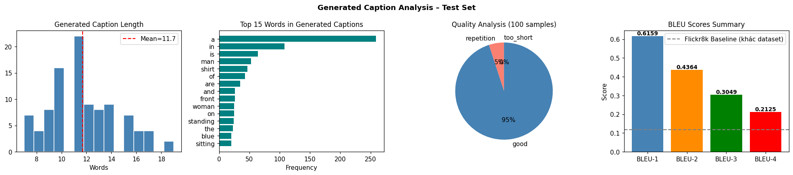
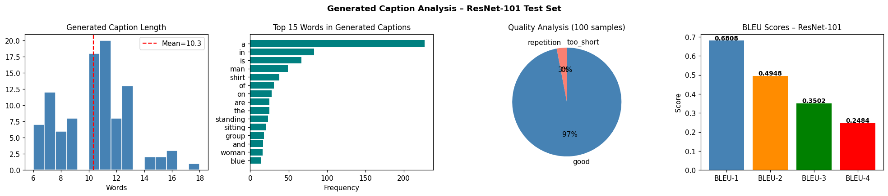
Kết quả trực quan
📌 Hiển thị Demo từ notebook — 4 ảnh test với caption từ 3 mô hình
Ví dụ caption tốt nhất (VGG16, BLEU-4 = 0.603):
Ảnh: [Người đàn ông và phụ nữ đang nhảy]
Caption sinh ra: "a man and a woman are dancing on a dance floor"
Ground truth: "a man and a woman are dancing together"Ví dụ caption thất bại:
Ảnh: [Cảnh thiên nhiên phức tạp]
Caption sinh ra: "a man is standing in a field" ← không có người
Ground truth: "a mountain with snow on it"⚠️ Mô hình gặp khó khăn với: cảnh thiên nhiên, nhiều người, hoạt động trừu tượng
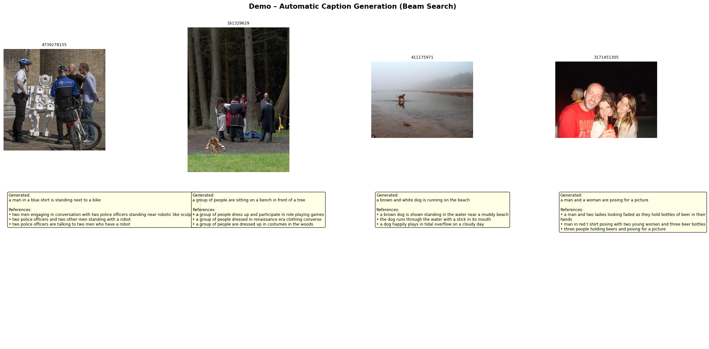
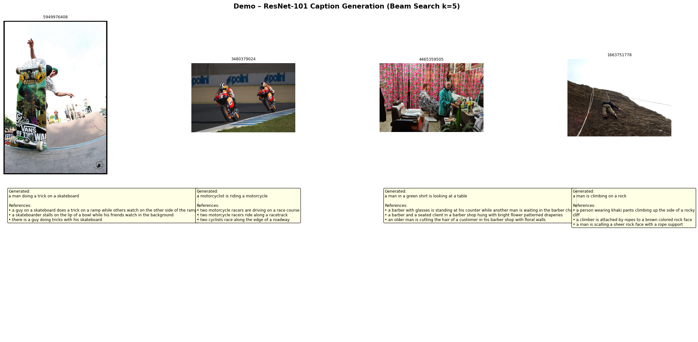
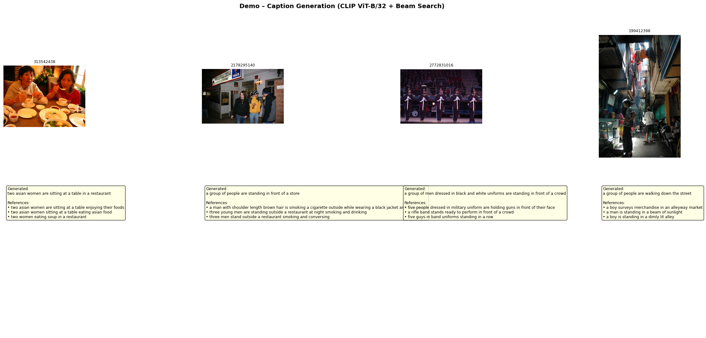
Tại sao ResNet-101 thắng CLIP?
Phân tích kỹ thuật:
| Yếu tố | ResNet-101 | CLIP |
|---|---|---|
| Feature dimension | 2048 chiều | 512 chiều |
| Thông tin không gian | Phong phú hơn | Đã nén qua ViT |
| Phù hợp với LSTM | ✅ Cao | Trung bình |
| Epochs huấn luyện | 10 | 10 |
Lý giải:
1. CLIP feature 512d — nhỏ hơn ResNet 2048d → ít thông tin không gian hơn cho Attention
2. CLIP tối ưu cho classification (image-text matching), không phải generation
3. Decoder LSTM không đủ sức tận dụng hết sức mạnh semantic của CLIP
4. Nếu dùng Transformer decoder thay vì LSTM → CLIP có thể vượt ResNet
✅ Kết luận: ResNet-101 phù hợp hơn với kiến trúc LSTM + Attention trong bài toán này
Benchmarking — Kết quả của nhóm so với công bố
| Công trình | Dataset | Encoder | BLEU-4 |
|---|---|---|---|
| Xu et al., 2015 (Hard Attention) | Flickr30k | VGG16 | 19.9% |
| Vinyals et al., 2015 (Google) | Flickr30k | GoogLeNet | 24.3% |
| Nhóm em — VGG16 | Flickr30k | VGG16 | 21.3% |
| Nhóm em — CLIP | Flickr30k | CLIP ViT-B/32 | 24.3% |
| Nhóm em — ResNet-101 | Flickr30k | ResNet-101 | 24.8% 🏆 |
✅ Kết quả của nhóm vượt Xu et al. (2015) và tương đương Google (2015) chỉ với LSTM thuần
✅ Điều này xác nhận kiến trúc nhóm em xây dựng hoạt động đúng và hiệu quả
Những gì nhóm em đã làm được:
✅ Xây dựng và so sánh thành công 3 mô hình Image Captioning trên Flickr30k ✅ Kết quả vượt baseline Xu et al. 2015, tương đương Google 2015 ✅ ResNet-101 đạt BLEU-4 tốt nhất: 24.8% — cải thiện 16.4% so với VGG16 ✅ Phát hiện bất ngờ: CLIP không vượt được ResNet với LSTM decoder ✅ Xây dựng Streamlit demo app cho phép upload ảnh và sinh caption real-time
Hướng phát triển tiếp theo:
| Hướng | Kỳ vọng |
|---|---|
| Thay LSTM bằng Transformer decoder | CLIP có thể phát huy toàn bộ sức mạnh |
| Fine-tune encoder thay vì frozen | Đặc trưng tốt hơn cho bài toán cụ thể |
| Dataset lớn hơn (COCO — 330K ảnh) | BLEU-4 có thể đạt >30% |
| Scheduled Sampling | Giảm exposure bias — cải thiện inference |
CẢM ƠN HỘI ĐỒNG ĐÃ LẮNG NGHE
Nhóm sinh viên thực hiện:
Lê Văn Cảnh | Nguyễn Đức Trường Giang
Giảng viên hướng dẫn: Hồ Nhựt Minh
Lớp: DT2307L — Aptech
Nhóm em xin sẵn sàng trả lời câu hỏi của hội đồng
⚠️ Phần này KHÔNG trình chiếu — chỉ để nhóm chuẩn bị trả lời hội đồng
Trả lời: CLIP feature 512 chiều nhỏ hơn ResNet 2048 chiều, cung cấp ít thông tin không gian hơn cho cơ chế Attention. Ngoài ra, CLIP được huấn luyện cho image-text matching (phân loại), không phải generation — nên LSTM khó khai thác được sức mạnh ngữ nghĩa của CLIP. Để CLIP phát huy hết tiềm năng cần Transformer decoder thay vì LSTM.
Trả lời: BLEU là thước đo chuẩn và được dùng rộng rãi nhất (từ 2002, Papineni et al.), dễ so sánh với các nghiên cứu khác. Tuy nhiên BLEU có hạn chế: không đánh giá được tính trôi chảy ngữ nghĩa cao. Các thước đo tốt hơn như CIDEr, METEOR, SPICE tập trung hơn vào semantic — đây là hướng cải thiện đánh giá cho đề tài sau.
Trả lời: Encoder được giữ frozen để tiết kiệm bộ nhớ GPU và tránh overfitting khi dataset không quá lớn (31K ảnh). Fine-tuning encoder cần GPU mạnh hơn và cần kỹ thuật discriminative fine-tuning để không làm hỏng pretrained weights. Đây là hướng phát triển tiếp theo có thể cải thiện BLEU thêm 1-2%.
Trả lời: Feature của ResNet-101 (2048d) và CLIP phong phú và biểu đạt hơn feature VGG16 (512d). Decoder LSTM học cách "đọc" feature tốt hơn trong ít epoch hơn. VGG16 cần nhiều epoch hơn để LSTM học cách bù đắp cho feature ít thông tin hơn.
Trả lời: Beam width 5 là giá trị chuẩn trong hầu hết các paper Image Captioning (Xu et al. 2015, Vinyals et al. 2015). Width lớn hơn không nhất thiết tốt hơn vì có thể sinh ra câu quá dài, lan man. Nhóm em giữ width = 5 để kết quả có thể so sánh trực tiếp với các công trình trước.
Trả lời: Flickr30k với 31,783 ảnh là dataset chuẩn, đủ để train mô hình có kết quả tốt và có thể so sánh với nhiều nghiên cứu. Dataset lớn hơn như COCO (330K ảnh) có thể cải thiện thêm BLEU-4 lên 30-35% — đây là hướng phát triển tiếp theo nếu có tài nguyên tính toán lớn hơn.
Trả lời: Demo app được xây dựng bằng Streamlit. Người dùng upload ảnh → app trích xuất feature bằng encoder đã train → LSTM sinh caption bằng Beam Search → hiển thị caption và attention heatmap. Toàn bộ pipeline chạy trên CPU/MPS (Apple Silicon) trong vài giây.
Trả lời: Ba điểm chính: (1) Thay LSTM bằng Transformer decoder để tận dụng tốt hơn CLIP feature; (2) Dùng CIDEr-D optimization thay vì cross-entropy thuần; (3) Thử Scheduled Sampling trong training để giảm exposure bias — giúp inference tốt hơn khi không có teacher forcing.